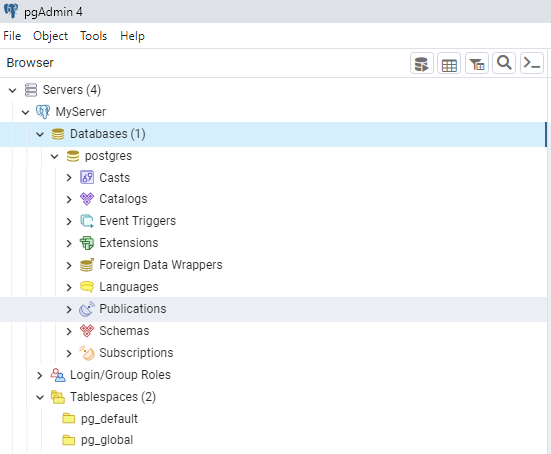
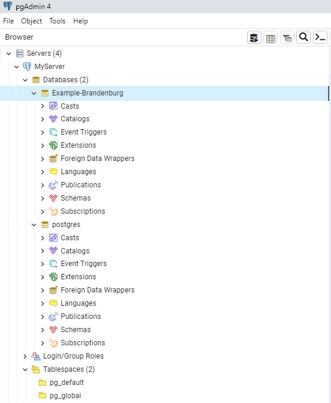
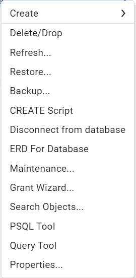
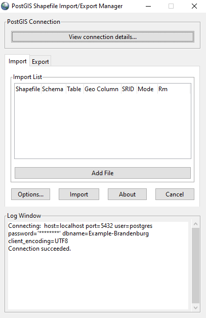
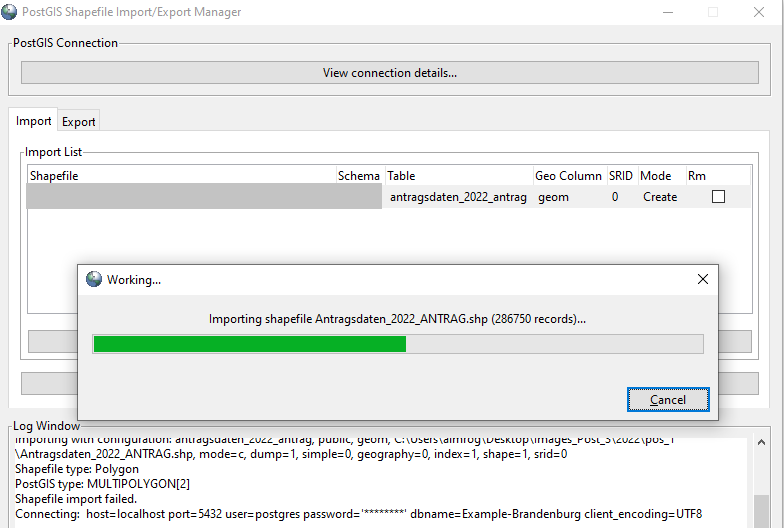

Basic descriptive statistics using SQL
I have always had an admiration for ancient architecture. They are the remnants of ancestral cultures, and in them we can see the human need to create something lasting, according to the needs of that time, but with an impeccable beauty that still delights our eyes. The same feeling I also have for relatively old programming languages. Although I currently work mainly with the Python programming language, I sporadically venture into programming something simple in C. The latter also opened my eyes to many concepts that are unfortunately taken for granted when starting in the programming world with a high-level language such as Python, such as declaring type variables, the use of pointers or memory management. This year though, I am committed to improve my skills in the SQL language, and its PostGIS extension for geospatial analysis. Like C, SQL is a language with great relevance nowadays and which allows us to make database queries, generate statistical analysis, and organize our data. SQL stands the test of time, and it is really worth taking the time to learn it if you haven't given it a try yet.
As you may recall from my previous post, I recently downloaded some shapefiles that I will be using in future side-projects.
In this new blog we are going to perform some basic geospatial queries using PostgreSQL and its geospatial PostGIS extension.
To start off, we are going to import the shapefiles into our database.
Getting our data in a local database
We start by ingesting our Shapefile in our Database. I am assuming that you already installed PosgreSQL, Pgadmin4 and have activated the POSTGIS extension. Otherwise here is a series of links that will help you to set up your system and have everything ready for the next exercises.
To download PostgreSQL and PGAdmin
-
PostgreSQL: Windows installers
-
Download pgadmin.org
How to create your first database schema
- Creating PostgreSQL Database - RapidMiner Documentation
How to install PostGIS extension:
- Installation — Introduction to PostGIS
After giving your password to access your database, start by collapsing the Servers Menu. You will find a list of the databases existing on your Server Group. As you can see I have a Database called postgres, which is the default database that will be existing when you opening your pgAdmin.

With a right click go to the Create, Database… option.

The following menu will be opened once you have selected the create database option. Here you will have to fill in the Database name field, which in this case I called "Example-Brandenburg" and the Owner postgres. Then click on Save.

Right click on the Example-Brandenburg Icon (or whatever name you have given to your database), and go to the Query Tool option. This will allow us to query the database later, but for now we will use it to activate our PostGIS extension for this database.


Again I repeat: I am assuming that you have already installed PostGIS on your computer. If so, just run CREATE postgis extension; and this will allow you to have all the geospatial analysis functionalities that PostGIS provides on your database.

Once you have activated the PostGIS extension, we are going to import our Shapefile into our database as a table. For this, let's look for the PostGIS Bundle 3 for PostgreSQL application, which should come with your PostGIS installation.

Once you click here, you will be taken to the PostGIS Shapefile Import/Export Manager, which will allow us to import our data in Shape format.

Once here, click on View connection details to view the details of your database connection, make the appropriate changes and verify that you have access to your database by testing the connection. In my example I put my username, which I have left as postgres because was my default value. Then I put the password that I created for my database. In the field host, I set it as 'localhost', because I am working locally. The port in my database is 5432 which is without fear of being wrong also the default value that is given to the user when creating his first database, and finally I put the value of Example-Brandenburg, which is the name of the database that I just created in the previous steps.

By pressing the OK button and if all goes well, you should receive a "Connection succeeded" notification, telling you that you have access to your database from the PostGIS Shapefile Import/Export Manager.

Now click on the "Add File" button to search for the shapefile in your filesystem. Once found select it and click on the open button at the bottom right.

After that click on the import button to start the import process to your database.

Once the process is finished, collapse your database menu "Example-Brandenburg". You will see the menu tables in which you will find a new table with the name of the shapefile you just imported. The table spatial_ref_sys, is a table that is presented when you did the activation of the PostGIS extension in a previous step.

By right clicking on your table you will find the menu where you will select the Query Tool option, to make a small test to our table in the database.

Here we are going to make our first query with the following command:
Please enter this command in the Query Window. You will have the output in the Data Output tab on the result's window.

Basically we are telling our database, please select all columns and all entries (rows) from the antragsdaten_2022_antrag table.
The result will appear in our Data Output window, and as we can see, there is the series of rows and columns that make up all the records of that table, which are the records of the Shapefile that we imported with the PostGIS Import Export Manager. After these steps, now let's start with the most fun part from my point of view, making spatial queries with this database.
Making our queries
How many and which columns does this table contain?
SELECT *
FROM information_schema.columns
WHERE table_schema = 'public'
AND table_name = 'antragsdaten_2022_antrag'
;

As we can see in a database the information can be organized in different schemas. Our table 'antragsdaten_2022_antrag' is in the public schema. The query above makes a selection of the columns of this table in that schema. The result shows us a total of 26 columns found in our table 'antragsdaten_2022_antrag'.
How many records (rows) exist in this table?
For this we are going to use the COUNT tool in SQL. The following query can be read as: make a count of all the rows in the table.

We can see that the table has a total of 286750 records. However, when we make the following query, we can see that some of these records contain incomplete values in some of their columns.

We are now going to count all the records that are complete (these are the records that do not have gaps in any of their columns). As we can see in the results, there are some information missing in the columns code_bez, code, which are relevant for later analysis. Let's count how many records have incomplete information in these columns.
How many records have missing values?

What we have told our database is to give us incomplete records by filtering our table by values where the column "code" and code_bez have no information (IS NULL).
What is the percentage of missing values and complete values in relation of all records in our table.
Now we are going to introduce a new concept in PostgresSQL which is the use of UNION. UNION allows us to join two results of select queries into a single table. First let's focus on what is after the comment / UNION OF TWO TABLES / (I have commented it for simplicity and understanding of the query). What we are doing here is first counting the number of rows where the code and code_bez columns have NULL values. After the count we add the value 'missing_values' in a column called category. Then we do the same but with the NON NULL values of the table antragsdaten_2022_antrag. These two queries we "join" them using the UNION clause in the middle of them. This result we assign the alias "t". Now at the top of the query, we are going to do our calculations. What we do is to select the count column of our newly aliased table "t". We also select the category column, and then we do the percentage calculation where we take the value of count, multiply it by one hundred and divide it by the count of all the entries in the table antragsdaten_2022_antrag. This result we assign the alias of percentage.
select t.count, t.category,
t.count*100/(select count(*) from antragsdaten_2022_antrag) percentage
from (
/* JOINING TWO TABLES */
SELECT COUNT(*), 'missing_values' category
from antragsdaten_2022_antrag
WHERE code IS NULL
AND
code_bez IS NULL
UNION
SELECT COUNT(*), 'non_missing_values' category
from antragsdaten_2022_antrag
WHERE code IS NOT NULL
AND
code_bez IS NOT NULL
/*##############################*/
)t
What is the number of parcels by code (crop class)?
To answer this question, we now introduce a concept which is the GROUP BY. This clause allows us to group results according to the values of a column. This clause becomes effective in cases where we calculate a variable for a group. For example: the number of elements (COUNT clause), or the average (AVG clause), or minimum or maximum values (MIN or MAX respectively). In this example we do it for the number of elements per group. First we apply the COUNT clause for all elements, add the value of the code_bez and code column of the table antragsdaten_2022_antrag, for the records with complete data, grouped by the columns code_bez, code and sorted by the result of count in descending order.
SELECT COUNT(*), code_bez, code
from antragsdaten_2022_antrag
WHERE code IS NOT NULL
AND
code_bez IS NOT NULL
GROUP BY code_bez, code
ORDER BY COUNT DESC
What is the average area of the plots?
For this last query we make use of a PostGIS function ST_Area, which allows us to calculate the area based on the geom column that contains the geometry. We add the value true, after the geom column because it is an area calculated based on a spheroid. The result is returned in square meters, so we divide it by 10 000 to convert this data into hectares. We finish the query by sorting the results by the average values in descending order.
SELECT code, code_bez, AVG(ST_Area(geom, true))/10000 avg_area_m2
from antragsdaten_2022_antrag
WHERE code IS NOT NULL
AND
code_bez IS NOT NULL
GROUP BY code, code_bez
ORDER BY avg_area_m2 DESC
Conclusion
And that concludes this post on my blog. We have started to ingest data in Shapefile format in a database and start making queries using the SQL language.
In a next blog post we will analyze how to make more spatial queries using this table in relation to other tables with other types of information.